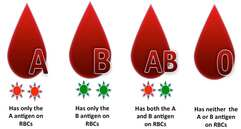
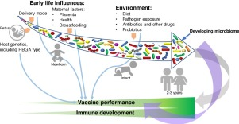
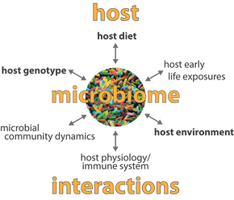

Among genes responsible for blood type, the ABO gene is one of the most important. This gene comes in 3 different flavors responsible for sugars sprinkled on red blood cells that help fight infection.
Blood group types are associated with higher or lower susceptibility to many diseases and conditions. Blood group A, for example, may predispose to severe malaria, while blood O protects against it. Persons with blood group type AB were less affected by the norovirus infection in the 2003 Japanese outbreak. Blood group type B are twice more susceptible to group B streptococcal disease.

Blood group types also influence bacteria in our gut. One study showed that the presence of blood group A antigens was associated with lower prevalence of the genus Blautia and that this reduction is accompanied by higher abundances of Rikenellaceae, Peptostreptococcaceae, Clostridiales, and Turicibacter.
Could blood group types also make people more susceptible to developing
peculiar odors?

The most common blood type in the world is O+ (~36.4%). About 4.3% have blood type O-. Blood types A+, B+ and AB+ are prevalent at approximately 28.3%, 20.6% and 5.1% respectively. Percentages for A-, B- and AB- are 3.5%, 1.4% and 0.5%.
These percentages may differ by country, but it appears that A- and B- blood types are less prevalent in MEBO population, while O and AB are more common.
Symptom-less diet was also different for different blood group types. Average Quality of Life score was 83, 92, 95 and 91 for O, A, B and AB groups, respectively (best for B, then A, worst for O), while MEBO symptoms were also least severe and most controllable for B- type, but worse for those with A antigens.
The widest variation in MEBO symptoms was in the AB group.
We'll talk about this and other insights in more detail in our following posts.
REFERENCES
Gampa A, Engen PA, Shobar R, Mutlu EA. Relationships between gastrointestinal microbiota and blood group antigens. Physiological genomics. 2017 Jul 14;49(9):473-83.
Mukherjee A, Basavarajegowda A, Harichandrakumar KT. Olfactory function and its association with ABO blood group in adults: A cross-sectional study. Global Journal of Transfusion Medicine. 2017 Jul 1;2(2):143.
Vlasova AN, Takanashi S, Miyazaki A, Rajashekara G, Saif LJ. How the gut microbiome regulates host immune responses to viral vaccines. Current opinion in virology. 2019 Aug 1;37:16-25.
Theis KR, Schmidt TM, Holekamp KE. Evidence for a bacterial mechanism for group-specific social odors among hyenas. Scientific reports. 2012 Aug 30;2:615.
Anjomruz M, Oshaghi MA, Pourfatollah AA, Sedaghat MM, Raeisi A, Vatandoost H, Khamesipour A, Abai MR, Mohtarami F, Akbarzadeh K, Rafie F. Preferential feeding success of laboratory reared Anopheles stephensi mosquitoes according to ABO blood group status. Acta tropica. 2014 Dec 1;140:118-23.
Lin CH, Peterson RA, Gueniche A, de Beaumais SA, Hourblin V, Breton L, Dalko M, Packer NH. Differential involvement of glycans in the binding of Staphylococcus epidermidis and Corynebacterium spp. to human sweat. Microbiological research. 2019 Mar 1;220:53-60.
Update on Clinical trial NCT03582826: Microbial Basis of Systemic Malodor and PATM Conditions
Recruited: 110 participants, Distributed 330 kits, Received IDs for 141 kits
Completed study: 40 participants
Submitted 2 samples: 6
Submitted 1 sample: 9
Answered questionnaire, received kits, but did not submit/share kit numbers: 7
Did not return samples nor
answered QoL questionnaire: 48 participants
Status of data analysis: awaiting on results from uBiome.
{kind=link}
{kind=link}
{kind=link}
{kind=link}